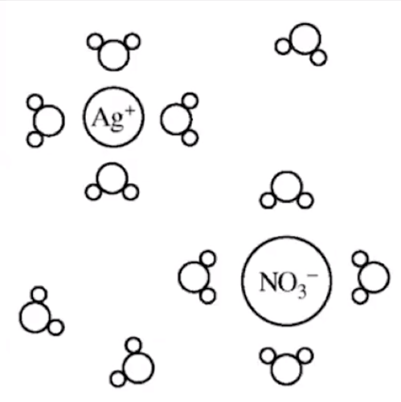

Representations-of-solutions
Representations of solutions
Particulate Representations--
Communicate structure and properties of solutions
- Ion sizes
- Orientation of solute ions and solvent particles (depends on polarity etc)
- Concentration of components
- Anions larger than cations
- Show interactions among components
{width="3.4583333333333335in" height="3.46875in"}